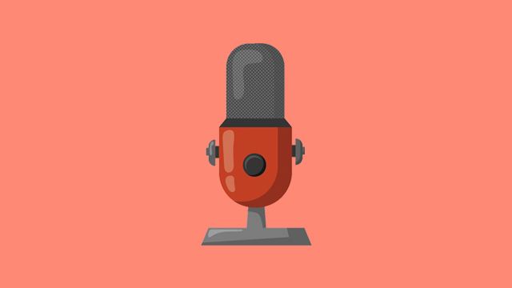

16px — حداکثر عرض کاور وسطچین 880px — موبایل 12px

این همان جای تصویر شاخص است: خودکار، وسطچین، با گوشههای گرد و سایهٔ ملایم. متن توضیحات بعد از تصویر ادامه پیدا میکند و چیدمان بههم نمیریزد.
موس را روی تصویر نگه دار تا هر دو افکت را ببینی.
در تم تاریک، سایه با پسزمینهٔ تیره هماهنگ میشود.